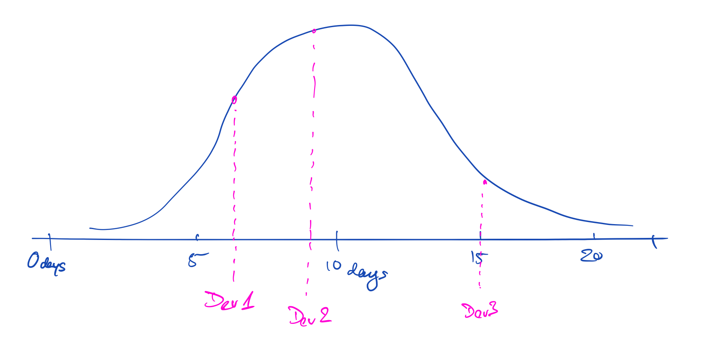
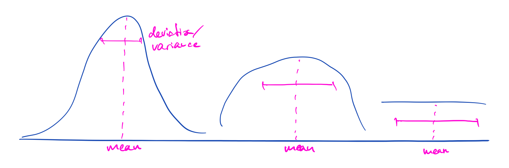
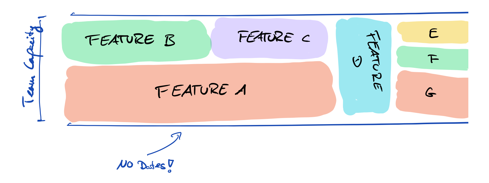

on
Effort Estimations and other Fairy Tales
Disclaimer: This is based on conversations, anecdotal evidence and personal opinion. This is not backed by statistical evidence. But neither is the cargo cult around estimations (to my knowledge). 🤷🏻♀️
Estimating is Guessing
I work a lot with technical product managers and one question I get a lot is “how long will this take”. My honest answer: “I don’t know”. I’ve had this conversation many of times over in the last year, it always goes more or less like this:
PM: How long will this take?
Me: I don’t know.
PM: We need to tell the business a date so they can make a decision.
Me: Yes, I understand where you are coming from, it’s our job to enable non-technical business stakeholders to make decisions. However we don’t know what to build, so we cannot give them any dates.
PM: But they want [feature X].
Me: Sure, that’s what they ask for. But what are the business problems we are solving? Where is the value? Which scenarios will we support? And why?
PM: Ok, I’ll clarify and get back at you… [walks away disappointed]
We don’t understand what business problem we are solving yet, so we can’t estimate anything. It’s super common for business stakeholders or users to ask for solutions instead of describing the problem they have. Problem solved 🎉.
Well not quite.
A little later I always have some variant of this follow up conversation:
PM: So we clarified with the business, they want to solve [problem] and I thought about solving it with [revised feature]. What do you think?
Me: Yeah sounds good. It’s technically feasible, I have a high level idea of how we can do this with our team. We can start working on it - you make the call.
PM: Wait a second - I need a date. How long will this take?
Me: I don’t know.
PM: But you know what we want to build, right? What else do you need to estimate the delivery date?
Me: Well truth is….
The hard, honest truth is: Nobody knows.
At this point many people throw up their hands in despair and argue “but we have all these estimation techniques, with numbers, discussions and processes! Our tools have these input fields for estimated effort and actual effort! We calculate velocity after every iteration!”. It’s true we have all that and we do all those things. Still: nobody knows! Let me unpack what I mean by that.
What are estimates?
In my experience the word “estimate” means different things to different people (well at least my organization).
- Product Manager: A vague delivery date so I can get decisions from the business stakeholders and I can plan a 3/6/12 months ahead.
- Project manager: An exact deadline I can put in the project progress report and track over time. If we hit it - status green. If we miss it - status red.
- Business Stakeholder: An exact delivery date, so I can prepare marketing & present to executives.
- Developers: An incomplete guess how long this may take, based on a 1-5 minute discussion.
- Engineering Managers: A metric that tells me how well my teams perform. Delivery within estimate - everything is running smoothly. Delivery over estimate - I have to step in and fix this.
Nobody is on the same page here. These are different books, in different genres, in different languages.
Rather than trying to nail down what an estimate should be or mean let's look at their characteristics, which is more about human cognition than about engineering.
Estimates are relative
We are bad at predicting the exact effort a feature will take in terms of hours and days. This stems from the inherent uncertainty: we’re doing something new, we don’t know all the minute details of the business problem and technical solution yet. More importantly we don’t know what we don’t know, this is something we cannot change. There are always unknown unknowns.
Another reason why exact predictions are near impossible is that developers don’t know how much time they actually have available. There’s 8 hours in a work day - but those are chopped up by meeting, interrupted by instant messages, eaten up by asynchronous communication and busy work. A developer may have 6 productive hours on a good day, but only 2 hours on a bad one. And that is completely out of the individual’s control - “Hey let’s set up a sync up meeting” - said no developer, ever. Another, more subtle effect is that we all do creative work, which flows best in bursts of uninterrupted focus time. A 30 minute meeting in the middle of the morning chops the potential flow time from 4 hours into 2 hours. So on paper a creative worker may have 7 hours of time in the work day, but that is chopped up into 2 hours (or less) chunks which inherently limits productivity of creative work.
Lastly we tend to forget to include everything in the estimation. Does the number include: automated tests? Code review? Discussions during development? Debugging the build script because suddenly everything broke? Having a 2 hour discussion with the product manager to finally figure out that you use the same words with different meanings? The potentially multiple round trips between QA & DEV?
Long story short: exact, absolute effort estimates don’t exist. if you disagree - go home you’re drunk! (Actually stay, finish reading and then send me your counter arguments)
However there is one thing of estimations that developers are really good at: Comparing effort. Allow me to illustrate:
Me: How long will it take to add this dynamic marketing banner [that we just discussed for 10 minutes]?
Developer: No idea!
Me: Will it take longer than adding button that exports the report as a PDF?
Developer: Ohhhh no, that was way more complex. This is way smaller, maybe half of it. But don’t hold me to that!
Me: Don’t worry, I won’t. How about this: Will it take longer than adding the dark theme to our application?
Developer: Hmmm… it’s kinda similar, maybe a little longer because of [technical reason X], but otherwise it’s almost the same. Maybe 25% more work I’d say.
I bet you’ve had this conversation before (or at least overheard it). In my experience developers (designers in general) are pretty good at relative estimates. Yes there are still unknown unknowns, that’s where buffer/slack comes in. But all the stuff we tend to forget - the long list above - those are accounted for by giving estimations relative to past effort.
This still does not give you an exact dates however, because…
Estimates are distributions
Wait, what?
I’m talking about probability distributions, something like a bell curve (= normal distribution). Now this is not my original insight, Gregor Hohpe told me this. It’s probably not his original insight as well - but that’s not the point. The point is: estimates are distributions. In other words: the number a developer gives you carries a probability, don’t take it at face value. Try to figure out how likely it is.

Some people tend to underestimate (me included), others tend to overestimate, let’s re-consider the dynamic banner feature
PM: How long will it take to build this dynamic banner?
Dev 1: Hmmm… I think I could do it in 2 days
Dev 2: Really? I was thinking more like… 6 days?
[discussion ensues]
Neither of them is right. Because nobody knows. They both gave numbers, both numbers have a probability, maybe it’s 25% chance that it’ll take 2 days and 45% it’ll take 6 days (and 30% for some other values). Again we don’t know. However being aware that every estimate is a distribution, rather than a number, enables us to understand it better. We can probe for the mean value and the deviation/variance of the distribution (how far the actual time strays from the mean).
PM: So we have 2 days and 6 days. Both are possible, but let me ask you this: Do you think it could take 20 days?
Dev 1 & Dev 2 (in unison): NO WAY!
PM: Okay, let’s imagine everything goes wrong, and then some more. What is the very worst case?
Dev 2: I’d say 10 days.
Dev 1: Yeah that is possible.
PM: Ok understood. How about the very best case, everything goes perfectly and you flow for 8 hours straight?
Dev 1: Best case is 1 and a half days
Dev 2: It’s a bit of a stretch but maybe…
Now you have more data points, you know it will definitely be between 1.5-10 days. It’s still an estimate, nobody knows, but it is very likely that you’re team finishes in that time frame. More likely than the “let’s average estimates (2 + 6) / 2 = 4 days” approach anyways.

Planning poker tries to do something similar, but it still tries to find a singular number (the mean of the distribution). While the mean is cool information I find the variance much more relevant. Variance is risk, risk is bad for business. (Note: I work in Tokyo, risk is seen differently in this cultural context than in, say San Francisco). So planning poker is slightly beside the point in my opinion. Go ahead, shoot me.
You are probably thinking “hey didn’t you just say don’t use absolute numbers, estimates should be relative?”. Yes you are right. I made the 2 points independently, hoping that even if you don’t buy that estimates are relative maybe you agree that they are distributions (or vice versa). The two hypotheses play well together, testing for upper and lower limits translates to relative estimates in straightforward fashion.
Estimates are proxies
Estimates and estimate derived metrics make for horrible KPIs. Calculating velocity and comparing teams based on that creates horrible incentives. Once a team learns that high velocity is good they will inflate estimates - be it story points or absolute time.
“Course correct and reward accurate estimates!” the ambitious young middle manager might exclaim. What are the incentives now? Spending more time planning and estimating will produce more accurate predictions. Still nobody knows, so “more accurate” only means lower variance of the distribution. Once a team learns that they will spend more time planning & estimating, less time creating. How about 2 days of planning a week? Sounds pretty unproductive, right? But that what our poor middle manager incentivizes.
Estimates don’t tell you how productive a team is. The hard truth is that “We Cannot Measure Productivity”. Some people try to anyways and use some sort of velocity or estimation quality metric as a proxy. And that may make sense for some cases. But estimates as metrics are always only proxies for what you are actually interested in (time to market, business continuity, predictability etc.). Proxies don’t have value in and of themselves. The absolute values of a proxy usually does not matter, trends (sometimes) do. For example test coverage is a proxy for quality, but a value of 60% does not matter. What matters if your test coverage goes up or down. That tells you something is happening in the team, it triggers you to look into it. So velocity up or down? Something to look into, not telling if the team is doing well or not.
So what now?
After reading all about why estimates are lies you either abandon me and my preaching as wrong - or you ask yourself: Well what should I do? We still have to enable our business stakeholders to make informed decisions about technology. We still need to plan our product development, at least a bit more than one iteration ahead of time. Project managers still need to track project progress (…maybe…). So how shall we go about this without absolute time estimates?
Which brings us to the only viable application of estimates: Product roadmap as a pipeline. We usually have a good idea of what want build in the next X months, what the priorities are and how much we can take on in parallel. The only thing we don't know is how long it will take in absolute terms (and if it delivers the value we hope for, but that's a story for another time). As it turns out relative estimations are enough for us to effectively schedule development work.

This pretty much looks like most product roadmaps I have seen, the only difference is: no hard dates attached. Other than that it's pretty conventional: a concept of team capacity, how much work a team can work on effectively at any given point in time. Parallel and sequential work with relative effort estimations (e.g. feature A takes roughly twice as long as feature B). If you erase all dates from our product roadmaps this is what we are doing already.
What if we do that?
We rid ourselves of the absurd fixation on absolute estimations. Instead we accept estimates are relative → so we only gauge how long something will take relative to past development work. We accept estimates as distributions → so we probe for mean and variance. We add buffer to account for the unknown. We pipeline the work. We accept estimates are proxies at best → nobody mentions workdays or story points ever again. Nobody measures velocity. Nobody will accidentally try to use a proxy measures as a KPI.
And the dirty little secret is: If you really want to put a date on the roadmap - because some executive asked for it or something - you can project based on past development effort and the relative estimates. That number you come up with is an aggregate of estimates - relative, distributions - so it plain english: it doesn't mean a whole lot. So please don't distract the development team with such silliness.
Conclusion
In summary the nature of effort estimates is:
- Absolute estimates are unreliable af, relative estimates are somewhat accurate.
- Estimates are not singular values, they are distributions.
- Estimates are proxies, they don't have inherent value.
If we accept these statements the only logical conclusion is to stop doing what doesn't work and continue/start doing what works. So let's stop absolute time estimations and start relative estimations and continue product roadmaps as pipelines.
In one sentence: Estimates are made up, don't trust them, don't spend a lot of time on them, instead pipeline work and monitor outcome.